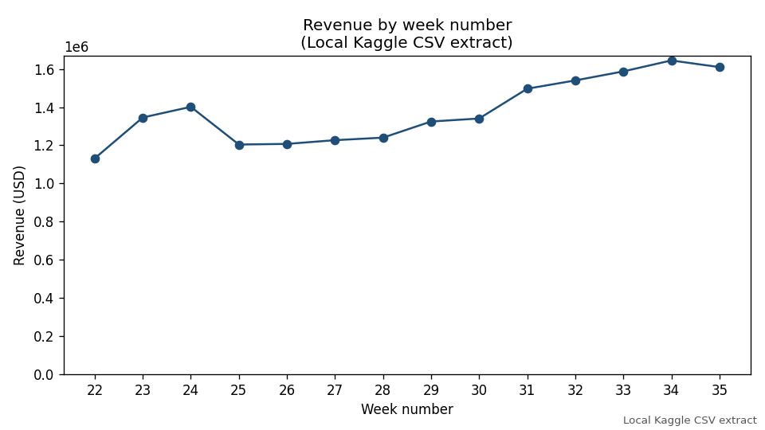
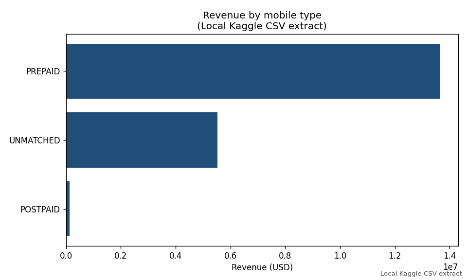
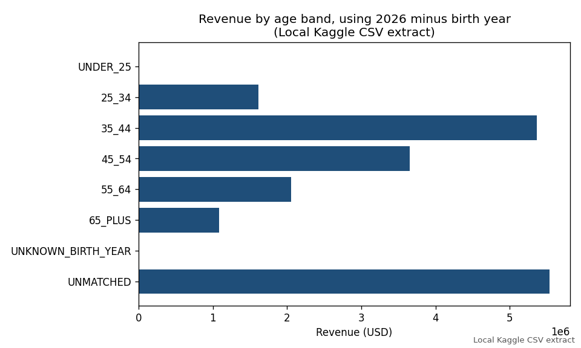
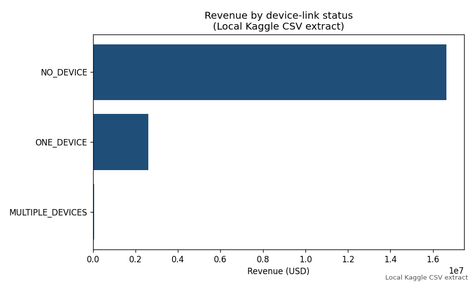
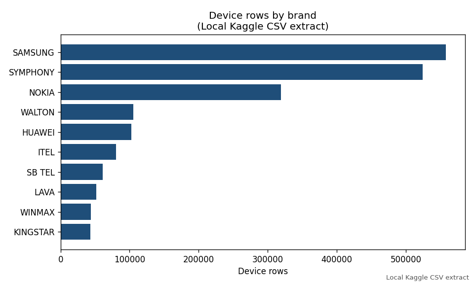

Independent project · Descriptive analytics
Telecom Customer and Revenue Analytics
A descriptive analysis of a public telecommunications extract: customer profiles, weekly revenue, and registered devices. Python loads the files. DuckDB runs the cleaning and analytical SQL. Pandas computes week-to-week change, and Matplotlib draws the charts. No predictive model was trained.
The totals below are historical observations from this local Kaggle extract. They are not live telecom statistics, a forecast, or a claim about any operating network.
Overview
The measured population is the local extract itself, not a sample drawn from it. After cleaning, it contains 11,249,351 customer profiles, 1,704,601 revenue rows, and 2,440,100 device rows. Revenue in the observed weeks totals 19,300,750.00 USD. The weekly, mobile-type, gender, age-band, and device-link tables each sum to that same revenue total and the same 1,704,601 revenue rows.
In every observed week, the number of revenue rows equals the number of distinct paying customers. The extract contains one revenue row per customer per week. There are 143,731 paying customers. The average transaction is 11.32 USD, and revenue per paying customer is 134.28 USD.
Dataset
The files are the public Kaggle dataset Telecom IOT, Customer and Revenue Dataset by Krishna Cheedella (krishnacheedella/telecom-iot-crm-dataset). Kaggle lists the license as CC0: Public Domain. The raw CSV files are not published with this page.
| File | Role | Rows read |
|---|---|---|
| crm1.csv | Customer profile | 13,627,493 |
| rev1.csv | Weekly revenue | 1,704,601 |
| device1.csv | Device inventory | 2,440,100 |
The shared key is a customer identifier. In this extract every paying identifier is a 32-character hexadecimal string. No raw identifier is shown here. The revenue file has a week number and an amount in USD. It does not contain a calendar year. The device file has brand, model, operating system, vendor, and an IMEI type-allocation field. The Kaggle description calls that field a location. A type-allocation code ordinarily identifies a handset model, so this study does not map it to a place.
Cleaning and processing
All source columns were read as text so that a birth year would remain an integer year. Revenue that cannot be joined to a CRM profile is kept and labeled unmatched. It is not dropped, and it is not assigned to prepaid, postpaid, a gender, or an age band.
- Customer identifiers were trimmed and uppercased. Empty identifiers were removed. None were empty in this extract.
- Gender was mapped to male, female, or unknown. Blank values and values other than male or female, including “Not Available,” remain unknown.
- Birth year was kept only when it was a four-digit integer from 1900 through 2015. Other values stayed null and were not imputed.
- Service status, mobile type, and value segment were standardized. Prepaid and postpaid spellings were collapsed. An empty mobile type or segment became unknown.
- CRM rows were reduced to one profile per identifier, preferring an active status, then a known gender, then a known birth year. This removed 2,378,142 duplicate CRM rows and left 11,249,351 profiles.
- Revenue was rounded to cents. A row was kept when it had an identifier, an amount, and a week number from 1 to 53. No revenue row failed those rules, and none had a negative amount.
- Device fields were uppercased. Exact duplicate device rows were collapsed. No device row lacked an identifier, and the cleaned device count remained 2,440,100.
Age is 2026 minus year of birth. That reference year is an assumption. The source provides a week number and no transaction year. Brand revenue is reported only for customers with exactly one cleaned device row, so one payment is not given to every handset.
Findings
| Measure | Value |
|---|---|
| CRM rows read | 13,627,493 |
| CRM profiles after deduplication | 11,249,351 |
| Revenue rows kept | 1,704,601 |
| Paying customers | 143,731 |
| Device rows | 2,440,100 |
| Customers with a device row | 2,381,966 |
| Total revenue | 19,300,750.00 USD |
| Average transaction | 11.32 USD |
| Revenue per paying customer | 134.28 USD |
Weeks 22-35
The file contains fourteen consecutive week numbers, 22 through 35. Weekly revenue moves from 1,131,490.32 USD in week 22 to 1,609,812.59 USD in week 35, a difference of 478,322.27 USD, or 42.3 percent. The path is not a straight line. Week 25 falls to 1,204,058.43 USD after week 24, and the highest week is week 34 at 1,644,656.74 USD. Paying customers move from 105,047 in week 22 to 135,274 in week 35.
Of 143,731 paying customers, 77,741 (54.1 percent) have a revenue row in all fourteen weeks. Only 560 customers appear in a single week. The 42.3 percent comparison is the change from the first observed week to the last, not a fitted growth rate.
Revenue without a CRM profile
Of the 19,300,750.00 USD, 13,765,352.68 USD (71.3 percent) joins to a CRM profile and 5,535,397.32 USD (28.7 percent) does not. The matched amount comes from 97,351 customers and 1,188,888 transactions. The unmatched amount comes from 46,380 customers and 515,713 transactions. Those 97,351 matched payers are 0.87 percent of the 11,249,351 CRM profiles. The CRM file is much larger than the set of customers who have revenue in weeks 22-35.
The 46,380 unmatched paying identifiers do not occur anywhere in the CRM file, either before or after deduplication. Trimming and uppercasing produce no additional matches. All matched and unmatched payers use a 32-character hexadecimal identifier, and the same gap is present in every week from 22 to 35. Unmatched revenue is between 26.7 and 30.1 percent of each week’s revenue. This is a coverage gap between the source tables, not a failure confined to one week and not an effect of removing duplicate CRM rows.
Matched customer attributes
Among matched revenue, prepaid accounts for 13,632,426.46 USD (99.0 percent of matched revenue) from 96,555 customers. Postpaid accounts for 132,926.22 USD from 796 customers. The postpaid average transaction is 12.83 USD, compared with 11.57 USD for prepaid. The postpaid group is small, so that difference describes this extract only.
Matched revenue by recorded gender is 11,139,751.36 USD for male (78,635 customers), 1,290,843.65 USD for female (9,331 customers), and 1,334,757.67 USD for unknown gender (9,385 customers). Unknown gender is about as large as the female total. In the full CRM table, 1,190,998 profiles (10.6 percent) have unknown gender. Value segment takes one value only, TIER_3, for all 11,249,351 profiles, so segment comparisons are not available. Service status is almost uniform: 11,247,484 profiles are active, 1,866 are suspended, and 1 is deactive.
Under the 2026 age assumption, matched revenue is concentrated in midlife bands: 5,366,095.07 USD at ages 35-44 and 3,653,747.71 USD at ages 45-54. Together those two bands are 65.5 percent of matched revenue. Ages 25-34 contribute 1,613,829.42 USD, ages 55-64 contribute 2,051,618.03 USD, and ages 65 and over contribute 1,079,452.45 USD. Under 25 and unknown birth year together contribute 610.00 USD, from four matched customers.
Devices
The device table has 2,440,100 rows and 2,381,966 distinct customers. Most of that inventory is not linked to a revenue row. Among revenue, 16,638,613.01 USD (86.2 percent) belongs to 123,687 paying customers with no device row. Another 2,604,466.46 USD belongs to 19,577 customers with exactly one device row. Customers with more than one device row account for 57,670.53 USD and 467 customers.
The ten largest brands by device row are led by Samsung (558,040 rows), Symphony (524,623), and Nokia (319,389). Those three brands are 57.5 percent of device rows. Brand revenue is reported only inside the single-device subset of 2,604,466.46 USD. In that subset the same three brands lead: Samsung 581,674.76 USD, Symphony 541,264.72 USD, and Nokia 434,251.73 USD. Those figures are not shares of the 19.3 million USD total.
Visualizations
These five charts were produced by the analysis. Each one is labeled as the local Kaggle extract. They are not additional results beyond the tables above.





Limitations
- The results describe this extract. They are not a forecast, a causal estimate, or the output of a predictive model.
- Week numbers run from 22 to 35, and the file has no calendar year. The 42.3 percent comparison is the change from the first observed week to the last, not a fitted growth rate.
- Age bands depend on subtracting birth year from 2026. A different reference year would move the bands.
- Value segment cannot be analyzed, because every CRM profile is
TIER_3. Service status is likewise almost entirely active. - Gender is unknown for 10.6 percent of CRM profiles, and unknown-gender revenue is about as large as female revenue. Gender comparisons are incomplete.
- 28.7 percent of revenue has no CRM attributes. Assigning that amount to prepaid, postpaid, gender, or age would invent a profile. It is reported separately instead.
- 86.2 percent of revenue has no device row. Brand patterns describe the device table, and brand revenue describes only the single-device subset.
- The postpaid average rests on 796 customers.
- Identifiers are hashed. The study does not locate customers, and the IMEI type-allocation field is not treated as a geography.
- The CRM deduplication rule is an analytical choice. It does not create the unmatched-revenue gap: those identifiers are absent from the CRM file before deduplication as well.
The downloadable archive contains the Python and SQL implementation, tests, license, and reproduction instructions. It does not contain the raw Kaggle files, the generated database, or customer-level records. The included README still describes an earlier synthetic run. The totals on this page come from the later run that loaded the local Kaggle files. REPRODUCE.md in the archive explains that distinction: the synthetic command does not reproduce these totals.